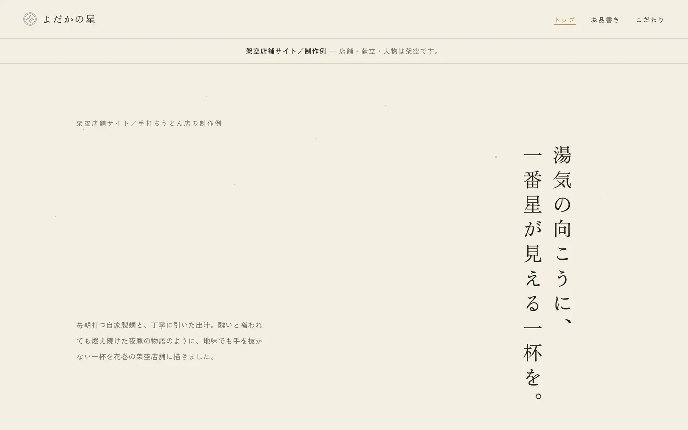
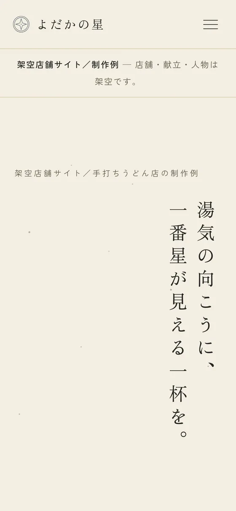

Work 02
よだかの星 手打ちうどん
湯気の向こうに、一番星が見える一杯を。

課題
写真がないまま、店を実在させる
この題材には使える写真がありませんでした。フリー素材の丼を借りてくると、どこの店でもない顔になります。写真を使わずに「ここにしかない店」をつくれるかが出発点でした。
設計
文字と余白だけで、世界のほうを立てる
宮沢賢治の『よだかの星』を下敷きにし、縦書きの見出しと星図のSVG、巨大な一文字を背景に置く構成にしました。イラストは意図的に描いていません。実物の代わりにベクター画像を置くと、途端にクリップアートの安っぽさが出るからです。紙のグレインと手彫り風の印章だけを質感として足しています。
学んだこと
「寂しい」の答えは、動きではなく情報
途中で画面が寂しく感じられ、演出を足したくなりました。実際に効いたのは、お知らせ・地図・曜日ごとの営業帯といった情報を先に充填することでした。動きはそのあとで足すほうが、結果的に少ない量で済みます。

スマートフォンでは、縦書きの見出しは折らずに縮め、下層4ページへの導線をフッターにまとめました。